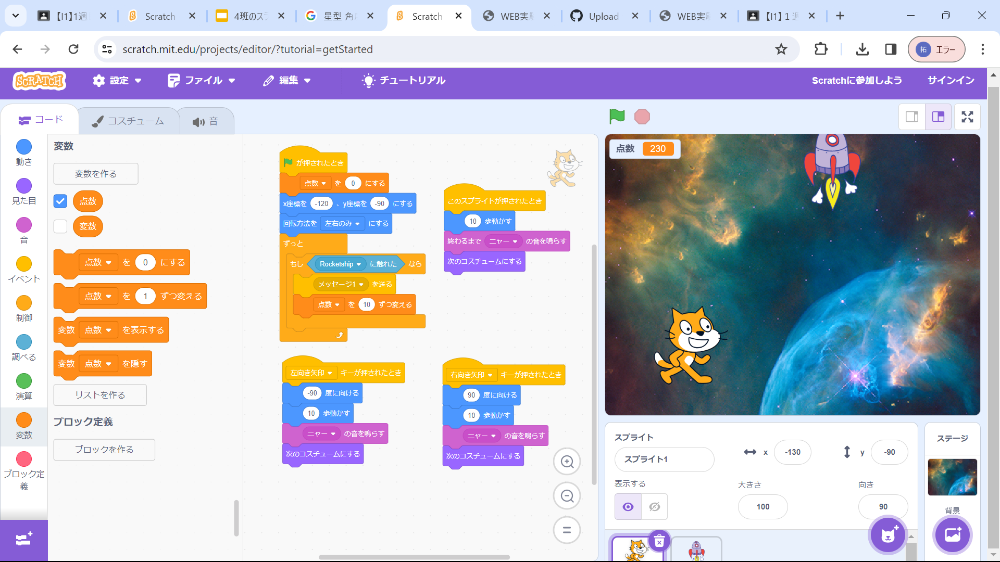

1-2 ゲーム

1.内容
猫ちゃんを左右に動かし、落ちてくるロケットをとり、とった数だけ点数が加算されるゲームを作成した。｢～されたとき｣や、｢もし～なら｣などのプログラムを効果的に使い、作られているプログラムである。
2.感想
上記にもあるとおり、｢～されたとき｣や、｢もし～なら｣などのプログラムを使っているが、逆にしっかりその部分を示さなければ思うとおりに動いてくれないので、プログラムを作成するときには一回実行する前に自分の頭の中でどう動くのか考え、確認してから実行するのが大切だと感じた。